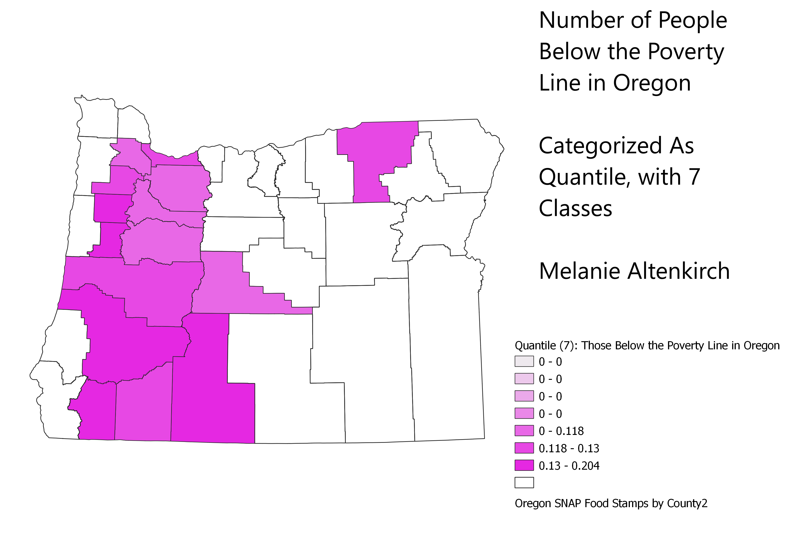
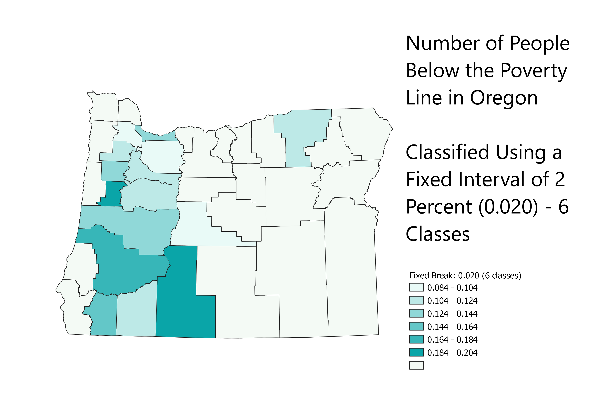
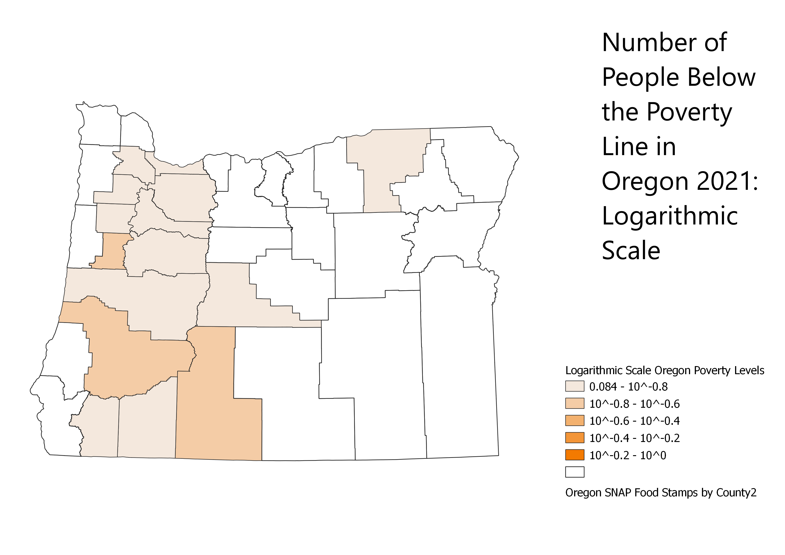

Homework 6: Using different modes to categorize data
Melanie Altenkirch. Friday, September 30th.
Map 1: Quantile Classification Using 7 Classes

Map 2: Fixed Interval Classification Using 6 Classes and an Interval of 0.02, or 2 Percent

Map 3: Logarithmic Scale with 5 Classes
